Plant Grimoire
Plants
- Acacia
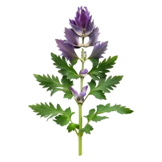
Acanthus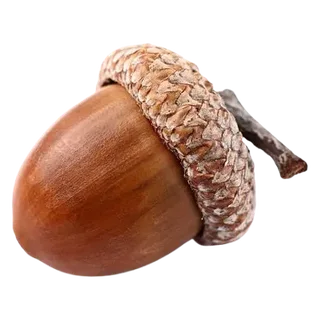
Acorn- Adam and Eve Roots
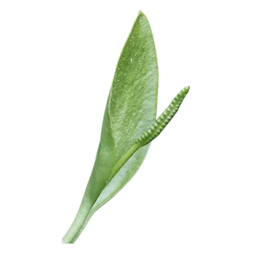
Adder's Tongue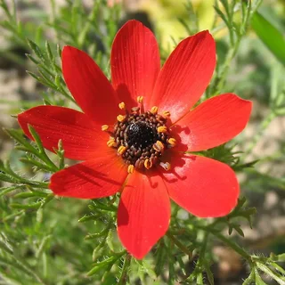
Adonis Rose- African Violet
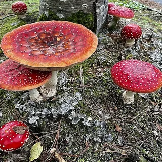
Agaric- Agarwood
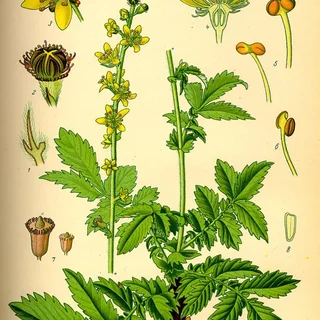
Agrimony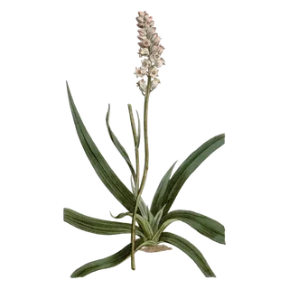
Ague Root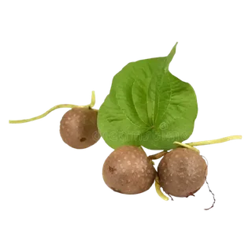
Air Potato- Ajos Sacha
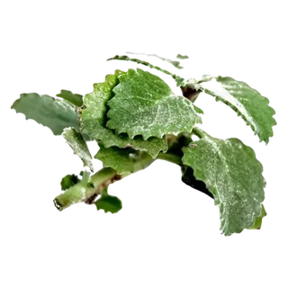
Ajowan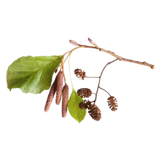
Alder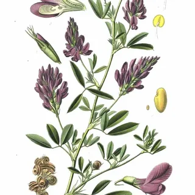
Alfalfa- Algae
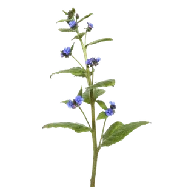
Alkanet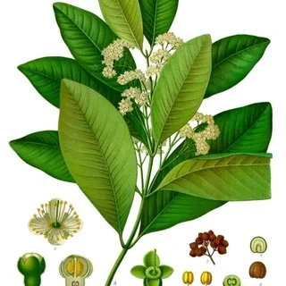
Allspice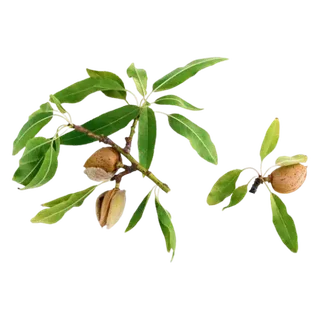
Almond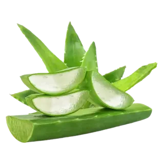
Aloe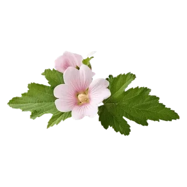
Althea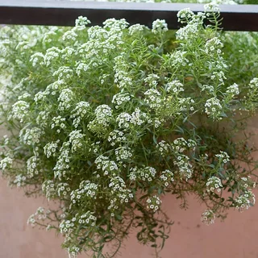
Alyssum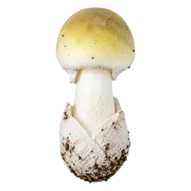
Amanita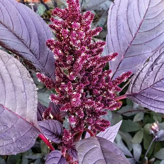
Amaranth- Amaryllis
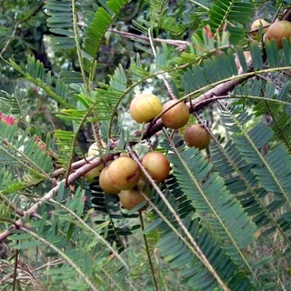
Amla- Amyris
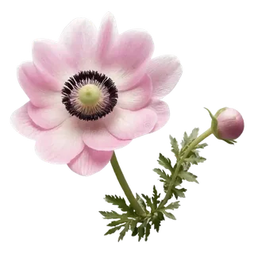
Anemone- Angel's Trumpet
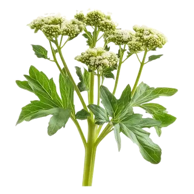
Angelica- Angel Wings
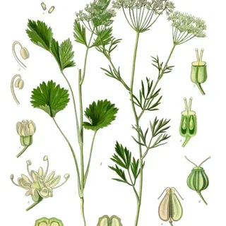
Anise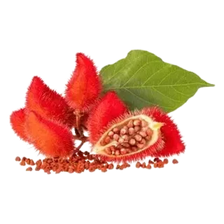
Annatto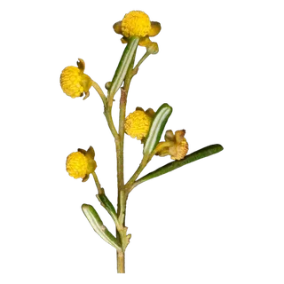
Antiseptic Bush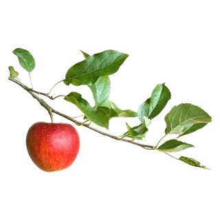
Apple- Apple Blossom
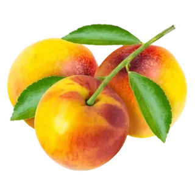
Apricot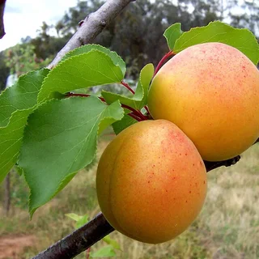
Apricot Kernel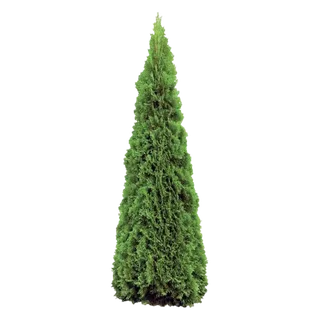
Arbor Vitae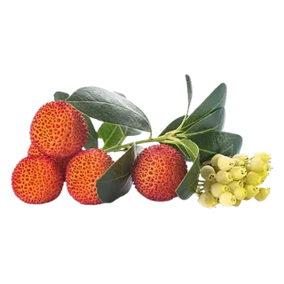
Arbutus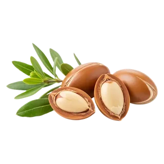
Argan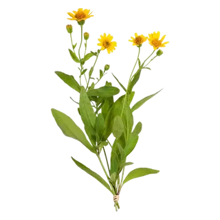
Arnica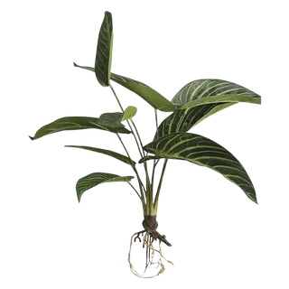
Arrowroot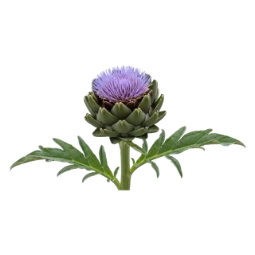
Artichoke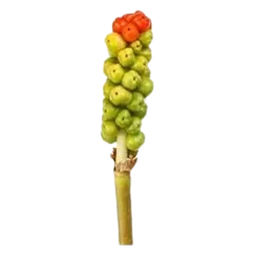
Arum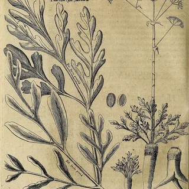
Asafoetida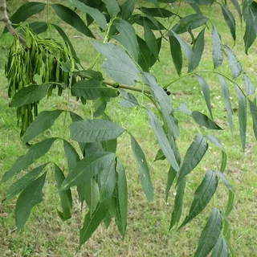
Ash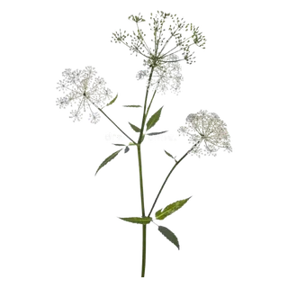
Ash Weed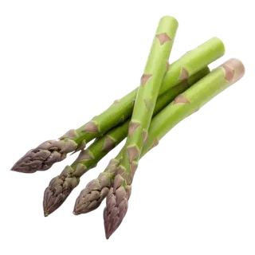
Asparagus- Aspen
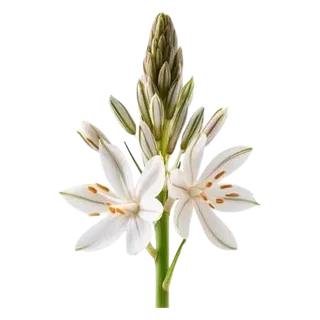
Asphodel- Aster
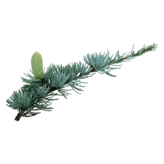
Atlas Cedar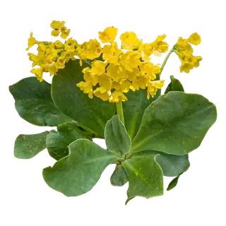
Auricula- Avens
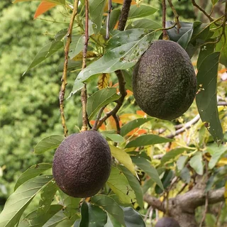
Avocado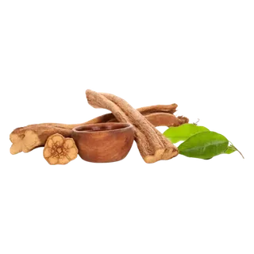
Ayahuasca- Azalea
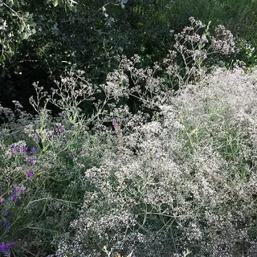
Baby's Breath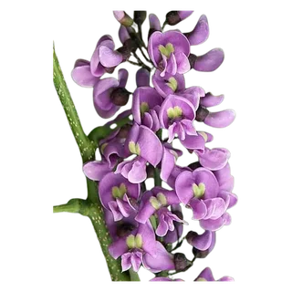
Balché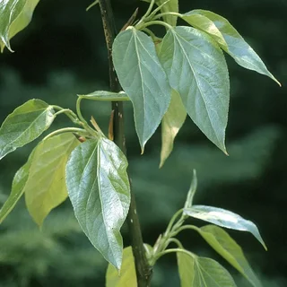
Balm of Gilead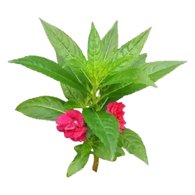
Balsam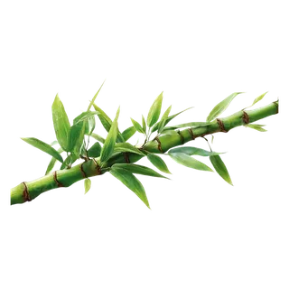
Bamboo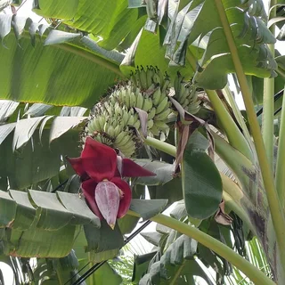
Banana- Banyan
- Baobab
- Barberry
- Barley
- Basil
- Bayberry
- Bay Laurel
- Beans
- Beech
- Beet
- Beggar's Tick
- Begonia
- Belladonna
- Bells of Ireland
- Benzoin
- Bergamot
- Bergamot Mint
- Bergamot Orange
- Betel Nut
- Betony
- Bilva
- Birch
- Bistort
- Bitter Orange
- Bittersweet Nightshade
- Black-Eyed Peas
- Black-eyed Susan
- Blackberry
- Black Cohosh
- Black Currant
- Blackthorn
- Bladderwrack
- Bleeding Heart
- Blessed Thistle
- Bloodroot
- Bluebell
- Blueberry
- Blue Cohosh
- Blue Flag
- Bodhi
- Bog Asphodel
- Boldo
- Bonduc
- Boneset
- Borage
- Borneo Camphor
- Boronia
- Bottlebrush
- Brazil Nut
- Breast Weed
- Briar
- Briony
- Broad-Leaved Peppermint Eucalyptus
- Bromeliad
- Broom
- Buchu
- Buck Bean
- Buckwheat
- Bugleweed
- Bulbous Buttercup
- Burdock
- Burnet
- Butcher's Broom
- Buttercup
- Butterfly Weed
- Button Snake Root
- Cabbage
- Cabbage Rose
- Cacao
- Cachana
- Cactus
- Cade
- Cajuput
- Calamint
- Calamus
- Calendula
- Calla Lily
- Calycanthus
- Camellia
- Camel Weed
- Camphor
- Canadian Balsam
- Cananga
- Candytuft
- Canterbury Bells
- Caper
- Caraway
- Cardamom
- Cardinal Flower
- Carnation
- Carob
- Carrot
- Cascara Buckthorn
- Cascarilla
- Cashew
- Cassia
- Cassie
- Castor
- Catalpa
- Catchfly
- Catnip
- Cat Tail
- Cattleya
- Cayenne Pepper
- Cedar
- Ceiba
- Celandine
- Celery
- Centaury
- Centella
- Chaste Tree
- Cherry
- Cherry Plum
- Chervil
- Chestnut
- Chickweed
- Chicory
- Chili Pepper
- China Berry
- Chives
- Chrysanthemum
- Cilantro
- Cinchona
- Cinnamon
- Cinquefoil
- Citron
- Citronella
- Clary Sage
- Clematis
- Cloth-of-Gold
- Clove
- Clover
- Club Moss
- Coca
- Coco de Mer
- Coconut
- Coffee
- Colchicum
- Coltsfoot
- Columbine
- Comfrey
- Compass Plant
- Contraveneno
- Copaiba Balsam
- Copal
- Corchorus
- Coreopsis
- Corn
- Cornflower
- Cornmint
- Coronilla
- Costmary
- Costus
- Cotton
- Cowage Plant
- Cowbane
- Cowslip
- Coxcomb
- Crabgrass
- Cranberry
- Cranesbill
- Creeping Cinquefoil
- Cubeb
- Cuckoo-Flower
- Cucumber
- Cumin
- Curry
- Cyclamen
- Cypress
- Daffodil
- Dahlia
- Daisy
- Damiana
- Dammar Gum
- Danda Root
- Dandelion
- Daphne
- Darnel
- Date Palm
- Datura
- Daylily
- Deerstongue
- Devil's Bit
- Devil's Claw
- Devil's Shoestring
- Dill
- Diosma
- Dittany of Crete
- Diviner's Sage
- Dock
- Dodder
- Dogbane
- Dog Grass
- Dog Rose
- Dogwood
- Douglas Fir
- Dracaena
- Dragon's Blood
- Dragon Root
- Dulse
- Dutchman's Breeches
- Dwarf Elder
- Dwarf Pine
- Ebony
- Echinacea
- Edelweiss
- Eggplant
- Elder
- Elecampane
- Elemi
- Elm
- Emmer Wheat
- Enchanter's Nightshade
- Endive
- English Walnut
- Epazote
- Eremurus
- Ergot
- Eryngo
- Eucalyptus
- Eucharis Lily
- Eupatorium
- Euphorbia
- Evening Primrose
- Eyebright
- Eye of the Devil
- Fairy Wand
- False Hellebore
- False Winter's Bark
- Fennel
- Fenugreek
- Fern
- Feverfew
- Field Clover
- Fig
- Figwort
- Flax
- Fleabane
- Fleawort
- Flora's Bell
- Flowering Reed
- Flowering Spurge
- Forget-Me-Not
- Forsythia
- Foul-mouthed
- Foxglove
- Foxtail Grass
- Fragrant Bedstraw
- Frankincense
- Fraxinella
- Freesia
- Fringe Tree
- Fuchsia
- Fumitory
- Fungus on Elder
- Furze
- Galangal
- Galbanum
- Gardenia
- Garlic
- Gentian
- Geranium
- Gerbera
- German Chamomile
- Germander
- Ghost Chili
- Giant Vetch
- Ginger
- Ginkgo
- Ginseng
- Gladiola
- Globe Amaranth
- Gloxinia
- Goat's Rue
- Goldenrod
- Goldenseal
- Gooseberry
- Goosefoot
- Gourd
- Grains of Paradise
- Grannybush
- Grape
- Grapefruit
- Grass
- Green Tea
- Grey Spider Flower
- Ground Ivy
- Groundsel
- Guaiacwood
- Guava
- Guelder Rose
- Gum Ammoniac
- Gum Bdellium
- Gum Scammony
- Habanero Pepper
- Harebell
- Hart's Tongue
- Hawthorn
- Hazel
- Heather
- Helichrysum
- Heliotrope
- Hellebore
- Hemlock
- Hemlock Spruce
- Hemp
- Henbane
- Henna
- Herb Paris
- Hibiscus
- Hickory
- High John the Conquerer
- Holly
- Hollyhock
- Holy Basil
- Honesty
- Honeyflower
- Honey Locust
- Honeysuckle
- Hops
- Horehound
- Horny Goat Weed
- Horseradish
- Horsetail
- Hound’s Tongue
- Houseleek
- Houstonia
- Huayruru
- Huckleberry
- Hyacinth
- Hydrangea
- Hyssop
- Indian Paint Brush
- Indigo
- Iris
- Irish Moss
- Iroko
- Ivy
- Jaborandi
- Jack Bean
- Japonica
- Jasmine
- Java Citronella
- Jerusalem Oak
- Jezebel Root
- Job's Tears
- Joe-Pye Weed
- Jojoba
- Jonquil
- Joshua Tree
- Jujube
- Juniper
- Karaya
- Kava-Kava
- Kelp
- Kennedia
- Knotweed
- Kola Nut
- Kukui Nut
- Lady's Mantle
- Lady's Slipper Orchid
- Lamb's Ear
- Lantana
- Larch
- Larkspur
- Laurustinus
- Lavender
- Lawson's Cypress
- Leadwort
- Ledum
- Leek
- Lemon
- Lemon-Scented Eucalyptus
- Lemon Balm
- Lemongrass
- Lemon Verbena
- Lentil
- Lettuce
- Lichen
- Licorice
- Life-Everlasting
- Lilac
- Lily
- Lily of the Valley
- Lime
- Linaloe
- Linden
- Ling Nut
- Lion's Ear
- Liverwort
- Lobelia
- Locust
- Longleaf Pine
- Long Pepper
- Loosestrife
- Lotus
- Lovage
- Love-in-a-Mist
- Low John the Conqueror
- Lucky Hand
- Lungwort
- Lupine
- Lychnis
- Macadamia
 Mace
Mace- Macrocarpa
- Magnolia
- Maguey
- Maidenhair
- Male Fern
- Mallow
- Mandrake
- Mango
- Manuka
- Maple
- Marigold
- Marjoram
- Marsh Marigold
- Marvel of Peru
- Mary's Seed
- Masterwort
- Mastic
- May Apple
- May Chang
- Mayflower
- Mayweed
- Meadowfoam
- Meadow Rue
- Meadowsweet
- Medicago Intertexta
- Melilotus
- Mesquite
- Mignonette
- Milk Thistle
- Milk Vetch
- Milkweed
- Millet
- Mimosa
- Mint
- Mistletoe
- Mock Orange
- Moly
- Moonflower
- Moonwort
- Moringa
- Morning Glory
- Moroccan Chamomile
- Moss
- Motherwort
- Mountain Mahogany
- Mountain Pepper
- Mouse-Ear Chickweed
- Mouse Blood Wort
- Mucura
- Mugwort
- Mulberry
- Mullein
- Mushrooms
- Musk
- Mustard
- Myrrh
- Myrtle
- Narcissus
- Nasturtium
- Neem
- Nephalium Loganum
- Neroli
- Nettle
- Niaouli
- Norfolk Island Pine
- Nutmeg
- Oak
- Oak, Holly
- Oak Moss
- Oats
- Ojo de Venado
- Okra
- Oleander
- Olive
- Onion
- Opopanax
- Opoponax
- Orange
- Orchid
- Oregano
- Oregon Grape
- Orpine
- Orris
- Palmarosa
- Palo Santo
- Pansy
- Papaya
- Paprika
- Papyrus
- Parosela
- Parsley
- Parsnip
- Passion Flower
- Patchouli
- Paulownia
- Pea
- Peach
- Peanuts
- Pear
- Pearlwort
- Pecan
- Pega-Pega
- Pennyroyal
- Peony
- Pepper
- Peppermint
- Pepper Tree
- Pepperwort
- Periwinkle
- Persea
- Persimmon
- Peru Balsam
- Petitgrain
- Petunia
- Peyote
- Phlox
- Pimpernel
- Pine
- Pineapple
- Pipsissewa
- Pistachio
- Plantain
- Plum
- Plumeria
- Poinsettia
- Poison Ivy
- Poke
- Pomegranate
- Poplar
- Poppy
- Potato
- Pothos
- Prickly Ash
- Primrose
- Privet
- Pumpkin
- Purslane
- Quaking Grass
- Quassia
- Quince
- Radish
- Ragged-Robin
- Ragweed
- Ragwort
- Rampion
- Ranunculus
- Raspberry
- Rattlesnake Root
- Ravensara
- Red Bell Pepper
- Red Sandalwood
- Reed
- Rhodiola
- Rhododendron
- Rhubarb
- Ribwort Plantain
- Rice
- Rock Rose
- Roman Chamomile
- Rosalina
- Rose
- Rosehip
- Rosemary
- Rose of Jericho
- Rose of Sharon
- Rosewood
- Rowan
- Rue
- Rye
- Safflower
- Saffron
- Sage
- Sagebrush
- Saint John's Wort
- Sampson Snake Root
- Sandalwood
- Sandarac
- Sanicle
- San Pedro Cactus
- Santolina
- Sapodilla
- Sarsaparilla
- Sassafras
- Sauroglossum
- Savine
- Savory
- Saxifrage
- Scouring Rush
 Scullcap
Scullcap- Sea Buckthorn
- Sea Spirit
- Seaweed
- Sedge
- Senna
- Sensitive Plant
- Sequoia
- Serpentaria
- Sesame
- Shallot
- Shepherd's Purse
- Silver Fir
- Silverweed
- Sitka Spruce
- Skullcap
- Skunk Cabbage
- Slippery Elm
- Snail Plant
- Snake's Head Fritillary
- Snake Head
- Snake Plant
- Snakeroot
- Snapdragon
- Snowdrop
- Soapwort
- Solomon’s Seal
- Southernwood
- Spanish Broom
- Spanish Moss
- Spanish Oregano
- Spanish Sage
- Spearmint
- Spider Flower
- Spider Lily
- Spiderwort
- Spike Lavender
- Spikenard
- Spindle Tree
- Spiritweed
- Spirulina
- Spruce
- Spurge
- Squill
- Star Anise
- Star of Bethlehem
- Star Scabious
- Stephanotis
- Stillingia
- Stinking Hellebore
- Stock
- Stonecrop
- Storax
- Straw
- Strawberry
- Succulents
- Sugar Beet
- Sugar Cane
- Sumbul
- Sunflower
- Sweet Annie
- Sweet Birch
- Sweet Chestnut
- Sweet Cicely
- Sweetgrass
- Sweetgum
- Sweet Pea
- Sweet Sultan
- Sweet William
- Sword Bean
- Sycamore
- Sycamore Fig
- Syrian Rue
- Tagetes
- Tahiti Vanilla
- Tamarind
- Tamarisk
- Tangerine
- Tanni Tree
- Tansy
- Taro
- Tarragon
- Teasel
- Tea Tree
- Terebinth
- Texas Cedarwood
- Thistle
- Thrift
- Thyme
- Ti
- Toadflax
- Tobacco
- Tolu Balsam
- Tomato
- Tonka
- Tragacanth Gum
- Trillium
- Tuberose
- Tulip
- Turmeric
- Turnip
- Uva Ursa
- Valerian
- Vanilla
- Vegetable Ivory
- Vegetable Oyster
- Venus' Flytrap
- Venus' Looking Glass
- Veronica Speedwell
- Vervain
- Vetivert
- Viburnum
- Violet
- Virginian Cedar
- Viscaria
- Wahoo
- Wallflower
- Walnut
- Wartwort
- Water Agrimony
- Watercress
- Water Hemlock
- Water Lily
- Watermelon
- Wax Plant
- Western Hemlock
- Western Red Cedar
- West Indian Bay
- West Indian Elm
- Wheat
- White Mustard
- White Poplar
- Wild Columbine
- Wild Ginger
- Willow
- Winter's Bark
- Wintergreen
- Winter Savory
- Wisteria
- Witch Grass
- Witch Hazel
- Wolf's Bane
- Wood Rose
- Woodruff
- Wood Sorrel
- Wormseed
- Wormwood
- Xanthorrhoea Arbores
- Yam
- Yarrow
- Yellow Flag
- Yellow Rattle
- Yerba Bruja (Kalanchoe pinnata)
- Yerba Buena
- Yerba Mate
- Yerba Santa
- Yew
- Ylang Ylang
- Yohimbe
- Yucca
- Zephyr Flower
- Zinnia